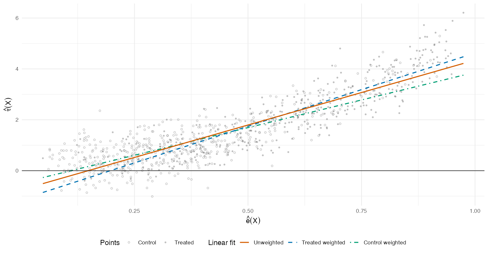
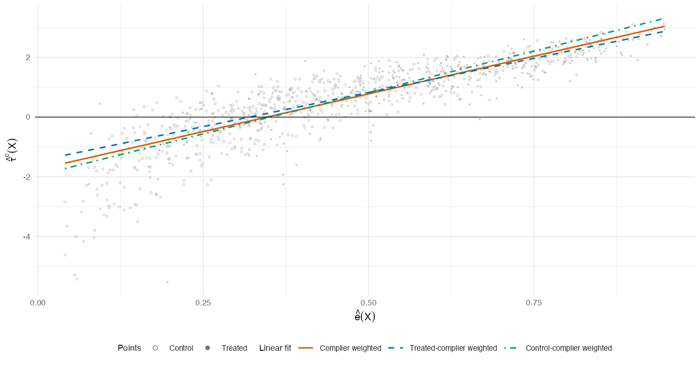

Diagnostic visualization for causal estimands
CP plots and local CP plots in R.
CPplot draws estimated treatment effects against estimated propensity scores and returns the diagnostic linear fits used to read bracketing relationships among weighted causal estimands.
Installation
install.packages("remotes")
remotes::install_github("e9tian/CPplot")
library(CPplot)Observational CP plot
If y is the outcome, z is the binary
treatment, and x is a covariate, a CP plot can be
drawn with cp_plot(y ~ z + x, data = df). The example
below uses two covariates in the same way.
Example
set.seed(1)
n <- 900
df <- data.frame(x1 = rnorm(n), x2 = rnorm(n))
df$z <- rbinom(n, 1, plogis(-0.30 + 1.05 * df$x1 - 0.45 * df$x2))
df$y <- 1 + 0.5 * df$x1 + 0.4 * df$x2 +
df$z * (0.5 + 1.4 * df$x1 - 0.6 * df$x2) +
rnorm(n, sd = 0.7)
fit <- cp_plot(y ~ z + x1 + x2, data = df)
fit$plot
Output
fit$slopes
fit$bracketing# fit$slopes
fit n slope std_error p_value
1 Unweighted 900 7.589266 0.04302250 0
2 Treated weighted 900 7.415186 0.04216743 0
3 Control weighted 900 7.750906 0.05294152 0
# fit$bracketing
fit slope slope_sign implication
1 Unweighted 7.589266 positive ATT >= ATE >= ATC
2 Treated weighted 7.415186 positive ATT >= ATO
3 Control weighted 7.750906 positive ATO >= ATCLocal CP plot for IV studies
If y is the outcome, d is the treatment,
z is the binary IV, and x is a covariate,
a local CP plot can be drawn with
local_cp_plot(y ~ d + x | z + x, data = df). The
example below uses two covariates in the same way.
Example
set.seed(2)
n <- 900
df <- data.frame(x1 = rnorm(n), x2 = rnorm(n))
df$z <- rbinom(n, 1, plogis(-0.25 + 0.95 * df$x1 + 0.35 * df$x2))
df$d <- rbinom(n, 1, plogis(-0.8 + 1.2 * df$z + 0.4 * df$x1 - 0.2 * df$x2))
tau <- 0.6 + 1.1 * df$x1 - 0.45 * df$x2
df$y <- 1 + 0.4 * df$x1 - 0.2 * df$x2 + tau * df$d + rnorm(n, sd = 0.6)
fit <- local_cp_plot(y ~ d + x1 + x2 | z + x1 + x2, data = df)
fit$plot
pi_c_hat, pi_c_hat * e_hat, and
pi_c_hat * (1 - e_hat).
Output
fit$slopes
fit$bracketing# fit$slopes
fit n slope std_error p_value
1 Complier weighted 900 5.059980 0.09484783 1.188898e-280
2 Treated-complier weighted 900 4.578982 0.08243187 9.440824e-293
3 Control-complier weighted 900 5.552853 0.12264241 5.104692e-234
# fit$bracketing
fit slope slope_sign
1 Complier weighted 5.059980 positive
2 Treated-complier weighted 4.578982 positive
3 Control-complier weighted 5.552853 positive
implication
1 tau_ATT^c >= tau_ATE^c >= tau_ATC^c
2 tau_ATT^c >= tau_ATO^c
3 tau_ATO^c >= tau_ATC^cWhat the diagnostic lines tell you
Read the slope signs as diagnostics. A positive fitted slope gives the implication listed below; a negative fitted slope reverses the corresponding inequality.
| CP plot line | Weight used | Population analog | Positive slope implies |
|---|---|---|---|
| Unweighted linear fit | 1 |
cov{tau(X), e(X)} |
tau_ATT >= tau_ATE >= tau_ATC |
| Treated-weighted linear fit | e_hat_i |
cov{tau(X), e(X) | Z = 1} |
tau_ATT >= tau_ATO |
| Control-weighted linear fit | 1 - e_hat_i |
cov{tau(X), e(X) | Z = 0} |
tau_ATO >= tau_ATC |
| Local CP plot line | Weight used | Population analog | Positive slope implies |
|---|---|---|---|
| Complier-weighted linear fit | pi_c_hat_i |
cov{tau^c(X), e(X) | U = c} |
tau^c_ATT >= tau^c_ATE >= tau^c_ATC |
| Instrument-treated complier fit | pi_c_hat_i * e_hat_i |
cov{tau^c(X), e(X) | U = c, Z = 1} |
tau^c_ATT >= tau^c_ATO |
| Instrument-control complier fit | pi_c_hat_i * (1 - e_hat_i) |
cov{tau^c(X), e(X) | U = c, Z = 0} |
tau^c_ATO >= tau^c_ATC |
Already have fitted nuisance functions?
Pass fitted columns directly. This is useful after causal forests, BART, SuperLearner, xgboost, or your own estimator.
cp_plot(
data = df,
e_hat = "e_hat",
tau_hat = "tau_hat",
treatment = "z"
)
local_cp_plot(
data = df,
e_hat = "e_hat",
tau_c_hat = "tau_c_hat",
pi_c_hat = "pi_c_hat",
iv = "z"
)See the API reference for every argument, helper functions, and bundled paper-demo data.
Citation
Please cite the paper that introduced the CP-plot diagnostics.
citation("CPplot")Tian, P., Yang, F., & Ding, P. (2026). Bracketing Relationships of Weighted Average Treatment Effects. arXiv preprint arXiv:2606.11715.